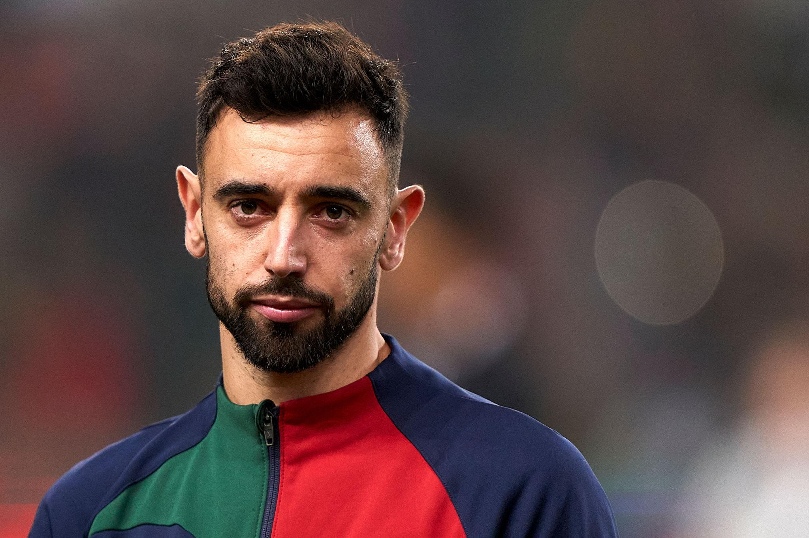
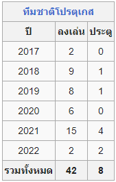

Bruno Fernandes

บรูนู มีแกล บอร์ฌึช ฟือร์นังดึช (โปรตุเกส: Bruno Miguel Borges Fernandes;
เกิด 8 กันยายน ค.ศ. 1994) หรือที่รู้จักในหมู่แฟนฟุตบอลชาวไทยว่า "บรูโน่ เฟอร์นานเดส"
เป็นนักฟุตบอลชาวโปรตุเกส ปัจจุบันเล่นในตำแหน่งกองกลางให้กับแมนเชสเตอร์ยูไนเต็ดและทีมชาติโปรตุเกส
เขาใช้เวลาส่วนใหญ่ในอาชีพนักฟุตบอลอยู่ที่กัลโชเซเรียอา ประเทศอิตาลี โดยลงเล่นในเซเรียอารวม 119 นัด และทำ 15 ประตูให้กับอูดีเนเซและซัมป์โดเรีย
ใน ค.ศ. 2017 เขาเซ็นสัญญาเล่นให้กับสปอร์ติงลิสบอน ทีมดังในโปรตุเกสประเทศบ้านเกิดและลงเล่นที่นั่นเป็นเวลา 3 ปี
ก่อนที่จะย้ายร่วมทีมแมนเชสเตอร์ยูไนเต็ดเมื่อวันที่ 20 มกราคม ค.ศ. 2020 ด้วยค่าตัว 55 ล้านยูโร (47 ล้านปอนด์) และได้สวมเสื้อหมายเลข 18
ซึ่งเคยเป็นหมายเลขของ พอล สโกลส์ ตำนานผู้เล่นตำแหน่งกองกลางของทีม บรูนู มีแกล บอร์ฌึช ฟือร์นังดึช (โปรตุเกส: Bruno Miguel Borges Fernandes; เกิด 8 กันยายน ค.ศ. 1994) หรือที่รู้จักในหมู่แฟนฟุตบอลชาวไทยว่า "บรูโน่ เฟอร์นานเดส" เป็นนักฟุตบอลชาวโปรตุเกส ปัจจุบันเล่นในตำแหน่งกองกลางให้กับแมนเชสเตอร์ยูไนเต็ดและทีมชาติโปรตุเกส เขาใช้เวลาส่วนใหญ่ในอาชีพนักฟุตบอลอยู่ที่กัลโชเซเรียอา ประเทศอิตาลี โดยลงเล่นในเซเรียอารวม 119 นัด และทำ 15 ประตูให้กับอูดีเนเซและซัมป์โดเรีย ใน ค.ศ. 2017 เขาเซ็นสัญญาเล่นให้กับสปอร์ติงลิสบอน ทีมดังในโปรตุเกสประเทศบ้านเกิดและลงเล่นที่นั่นเป็นเวลา 3 ปี ก่อนที่จะย้ายร่วมทีมแมนเชสเตอร์ยูไนเต็ดเมื่อวันที่ 20 มกราคม ค.ศ. 2020 ด้วยค่าตัว 55 ล้านยูโร (47 ล้านปอนด์) และได้สวมเสื้อหมายเลข 18 ซึ่งเคยเป็นหมายเลขของ พอล สโกลส์ ตำนานผู้เล่นตำแหน่งกองกลางของทีม
ฟือร์นังดึชได้กลายเป็นนักเตะตัวหลักในทีมในระยะเวลาอันรวดเร็ว และได้รับการยกย่องว่าเป็นหนึ่งในผู้เล่นกองกลางตัวรุกที่มีฝีเท้าดีที่สุดคนหนึ่งในพรีเมียร์ลีก เขามีจุดเด่นเรื่องการสังหารลูกตั้งเตะโดยเฉพาะการยิงจุดโทษที่เฉียบคมและยังยิงลูกฟรีคิกได้อย่างแม่นยำ นอกจากนี้เขายังมีทักษะการจ่ายบอลอันยอดเยี่ยมและการเคลื่อนที่อย่างชาญฉลาด ฟือร์นังดึชลงสนามในครึ่งฤดูกาลหลังในฤดูกาล 2019–2020 รวม 22 นัด ทำไป 12 ประตู และในฤดูกาลปัจจุบัน (2020–2021) เขายังคงรักษาฟอร์มการเล่นอันยอดเยี่ยมได้อย่างต่อเนื่อง โดยลงสนามให้แมนเชสเตอร์ยูไนเต็ดครบทุกนัดในลีก และลงเล่นทุกรายการรวม 55 นัด ทำไปทั้งสิ้น 27 ประตู โดยสามารถพาทีมผ่านเข้าสู่รอบชิงชนะเลิศยูโรปาลีกได้ในเดือนพฤษภาคม ค.ศ. 2021 เขาได้รับการแต่งตั้งเป็นกัปตันทีมใน ค.ศ. 2023
ฟือร์นังดึชได้ถูกเรียกเป็นผู้เล่นทีมชาติโปรตุเกสชุดใหญ่ตั้งแต่ ค.ศ. 2017 ในการแข่งขันฟุตบอลโลก 2018 ก่อนหน้านี้เขาเคยลงเล่นระดับเยาวชนในนามทีมชาติและเป็นอดีตกัปตันทีมชุดอายุต่ำกว่า 21 ปี ซึ่งมีรุย ฌอร์ฌึ เป็นผู้จัดการทีมและเคยพาทีมเข้าสู่รอบ 8 ทีมสุดท้ายในการแข่งขันฟุตบอลในกีฬาโอลิมปิกฤดูร้อน ค.ศ. 2016 นับตั้งแต่ ค.ศ. 2017 เป็นต้นมา เขาลงเล่นในนามทีมชาติชุดใหญ่ทุกรายการรวม 27 นัด ทำได้ 2 ประตู และได้รับการคาดหมายว่าจะเป็นตัวหลักของทีมในศึกฟุตบอลชิงแชมป์แห่งชาติยุโรปใน ค.ศ. 2021 รวมถึงการแข่งขันฟุตบอลโลกรอบสุดท้ายใน ค.ศ. 2022
สถิติทีมชาติ

ย่อกลับ